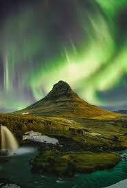

The Northern Lights
Yung pinaka-gusto kong maexperience sa Iceland ay yung Northern Lights. Sobrang ganda nun sa videos at photos pero sabi ng mga nakapunta na, walang camera na makakapantay sa pagkaganda nun pag nakita mo siya in person. Yung tipong nandoon ka sa gitna ng gabi, malamig, tapos bigla na lang may kulay na lumalabas sa langit, green, blue, purple. Parang di mo matanggap na totoo yung nakikita mo.

Why I Want to Visit Iceland
Iceland is yung tipong place na parang ibang planeta ang dating. Yung mga landscape nila, may glaciers, waterfalls, volcanoes, hot springs, lahat yun nasa iisang lugar lang. Sobrang unique ng Iceland kasi wala kang makikitang ganyan kahit saan pa pumunta.
Gusto ko rin maranasan yung extreme na lamig ng Iceland. Sa atin, mainit lagi so yung makaranas ng tunay na winter na may snow at ice sa lahat ng lugar, parang bucket list talaga yun para sakin. Yung mag-suot ka ng sobrang dami ng damit at pag labas mo, makikita mo yung hininga mo sa hangin.
Someday mapupuntahan ko na rin yan. Iceland is one of those places na kahit isang beses ka lang makapunta, sapat na yun para maging unforgettable memory mo habambuhay.